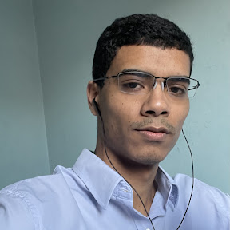

Ola boa tarde meu e israel tenho 24 anos sou natural de sao paulo e moro no bairro do grajau na zona sul.
Gosto de praticar exercicios de segunda a sexta na academia e cozinhar no dia a dia, alem de gosta bastante de series e filmes.
Sou bem curioso, então quando tinha 14 anos comecei um curso tecnico de informatica e la aprendi o basico de hardware e sofware e assim durante o curso consegui estagiar nesta escola onde tive minha primeira experiencia profissional.
Desde la tive outras experiencias profissionais e a ultima em janeiro de 2023 que foi em uma empresa do segmento agro, onde trabalhei com suporte ao cliente no tratamento e prevenção de sementes para o agronegocio e la utilizei ferramentas como excell para analisar de processos, Share Point para organizar documentos, microsoft Visio para criar fluxogramas e Power Bi e Canvas para criar apresentações.
No ano de 2022 comecei o curso de desenvolvimento de sistemas onde estudo na univerdade Senac no periodo noturno estou no terceiro semestre, la particei de projetos integradores o ultimo foi um Leitor de PDF que foi desenvolvido com Java, type Script e componentes no figma.
Em maio de 2023 por indicação de um amigo comecei um boot camp na generation Brasil la desenvolvi minhas habilidades comportamentais como proatividade, trabalho em equipe, comunicação e habilidades tecnicas como desenvolvimento back end com java no Spring Boot, e desenvolvimento front end com React.
Durante o Boot Camp participei de projetos como Magnifood que tem como objetivo tornar alimentos acessiveis para pessoas de baixa renda e Projeto Integrador chamado Minas na Area que tem o foco em mentoriar mulheres para o mercado trabalho.
E nesse ultimo projeto usamos o modelo MVC model view controller para implementar uma interface acessivel para os Usuarios. Alem de usarmos linguagem Java no back end e React no Front end.
Desde ja Agradeco a oportunidade e estou disponivel para responder perguntas Obrigado......
